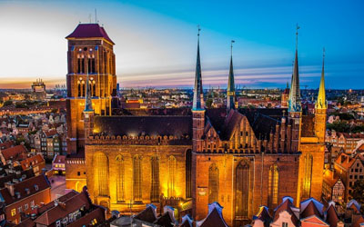

●Najpiękniejsze zabytki Gdańska w jednym miejscu●
●Stocznia Gdańska
zlokalizowana na lewym brzegu Martwej Wisły i na Ostrowiu.
zlokalizowana na lewym brzegu Martwej Wisły i na Ostrowiu.

●Żuraw
największy dźwig portowy średniowiecznej Europy.
największy dźwig portowy średniowiecznej Europy.

●Dwór Artusa
przez wiele lat był jednym z najwspanialszych tego typu obiektów w Europie północnej.
przez wiele lat był jednym z najwspanialszych tego typu obiektów w Europie północnej.
●Gdański Dworzec
fsfsfsfs

●Bazylika Mariacka
zwana "koroną miasta Gdańska" - Kościół Wniebowzięcia Najświętszej Marii Panny.
zwana "koroną miasta Gdańska" - Kościół Wniebowzięcia Najświętszej Marii Panny.

●Fontanna Neptuna
została zaprojektowana przez Abrahama van den Blocke. Podstawowym źródłem strumieni wodnych jest trójząb trzymany przez władcę mórz i oceanów w prawicy, znajdujące się u jego stóp konie morskie oraz krawędź postumentu.
została zaprojektowana przez Abrahama van den Blocke. Podstawowym źródłem strumieni wodnych jest trójząb trzymany przez władcę mórz i oceanów w prawicy, znajdujące się u jego stóp konie morskie oraz krawędź postumentu.